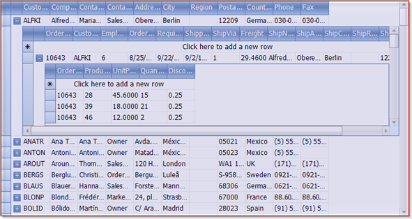
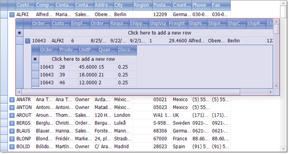
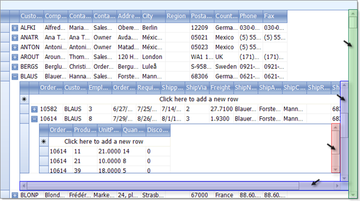
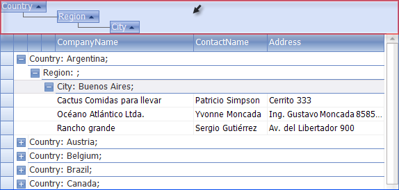

Overview of RadGridView Structure
Row
Each row in RadGridView is represented by GridRowElement class.
HeaderRow
The header element is represented by __GridHeaderRowElement__class.
Add New Row
Depending on the value of __GridViewTemplate.AddNewRowPosition__property, the new row element appears below the header row or after the data rows.
FilteringRow
*FilteringRow *appears automatically when you have Filtering enabled by setting RadGridView.EnableFiltering or GridViewTemplate.EnableFiltering properties.
GridViewIndentColumn
This column appears when the grid data is grouped or there is a hierarchical structure to facilitate the expand/collapse functionality. The expand column is always placed in front of all other grid content columns and cannot be moved.
GridViewDataColumn
Displays a column bound to a field in a data source.
MasterTemplate
MasterTemplate is the top most GridViewTemplate in the hierarchical structure.
It contains all inner GridViewTemplates(GridViewTemplate.Templates__collection).
When there is no hierarchical structure, only __MasterTemplate is displayed.

GridViewTemplate
__GridViewTemplate__is a basic class containing settings for a single level of the hierarchical structure.
ScrollBars
RadGrid will automatically show and hide scrollbars as needed. 
GroupPanel
When you want to enable the group-by functionality for the end-user, you need to set RadGridView.GroupingEnabled to true__and __GridViewTemplate.EnableGrouping. If you want to prevent the end-user to drag column header into the__GroupPanel__, set GridViewTemplate.AllowDragToGroup to__false. RadGridView.ShowGroupPanel__ shows/hides the group panel. You can access the group panel using __RadGridView.GridElement.HeaderElement.GroupPanel__property. 